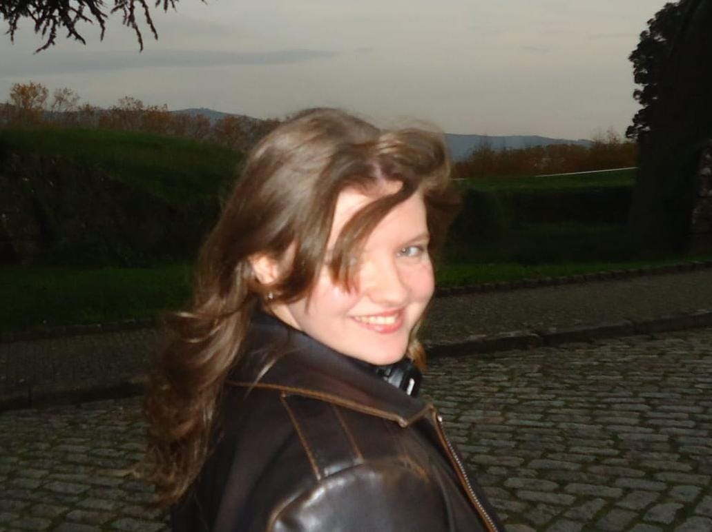

Bruna
Nascimento

About Me
My name is Bruna Nascimento, I am from Rio de Janeiro and have lived in Porto, Portugal, for
12 years. I am a multimedia technician specialized in motion design, 3D and interactive digital experiences,
dedicated to transforming ideas into memorable visual solutions.
I work from animations and motion graphics to innovative interactive digital experiences, always seeking to create unique and meaningful experiences.
This portfolio presents a selection of works that reflect my style and technique, showing how it is possible to combine creativity and functionality to create digital solutions that stand out and add real value for brands, companies and creative projects.
I work from animations and motion graphics to innovative interactive digital experiences, always seeking to create unique and meaningful experiences.
This portfolio presents a selection of works that reflect my style and technique, showing how it is possible to combine creativity and functionality to create digital solutions that stand out and add real value for brands, companies and creative projects.
001
Singularity
“Singularity” is an audiovisual animation
created in After Effects that portrays the life cycle of a star, from its emergence
to its final transformation. Using light, color and abstract forms, the piece guides the
viewer through a cosmic journey that reveals ephemerality, energy and metamorphosis.
An exercise in motion design and visual composition that symbolizes creative force and
universal transformation.
002
Inside Lumon
“Inside Lumon” is a 3D animation inspired by the mysterious
atmosphere of the series Severance, recreating the minimalist corporate environment of Lumon Industries.
Created in Blender, with visual effects and post-production in After Effects, the project explores
lighting, composition and movement to create a cinematic experience that reflects the
series’ distinctive and enigmatic visual style.
003
Beast in Motion
A series of fictional animated posters created in After Effects, combining
motion graphics and graphic design to bring the visual identity of the
Beast film festival to life. Each piece explores movement, typography
and geometric elements, transforming the festival concept into dynamic and memorable
visual experiences.
004
Harmonic Hall
"Harmonic Hall" is an experimental
WebGL environment where the inside of a cello becomes a stage and a navigable space.
Originally created in Blender and imported into Unity, the project invites the user to
explore the internal structures of the instrument as if it were an architectural hall.
Inspired by the photographic series "Architecture in Music"
, by Charles Brooks, the setting blends form, scale and sound to transform the musical
universe into a visual space.
005
Eye of Cthulhu
A 3D reinterpretation of the
Eye of Cthulhu, the iconic boss from
Terraria, reimagined through a darker and
more unsettling visual aesthetic. Created in Blender, the project explores organic forms,
procedural materials and shader development using nodes, combined with dramatic lighting
and atmospheric rendering to bring this familiar game creature into a more cinematic
horror setting.